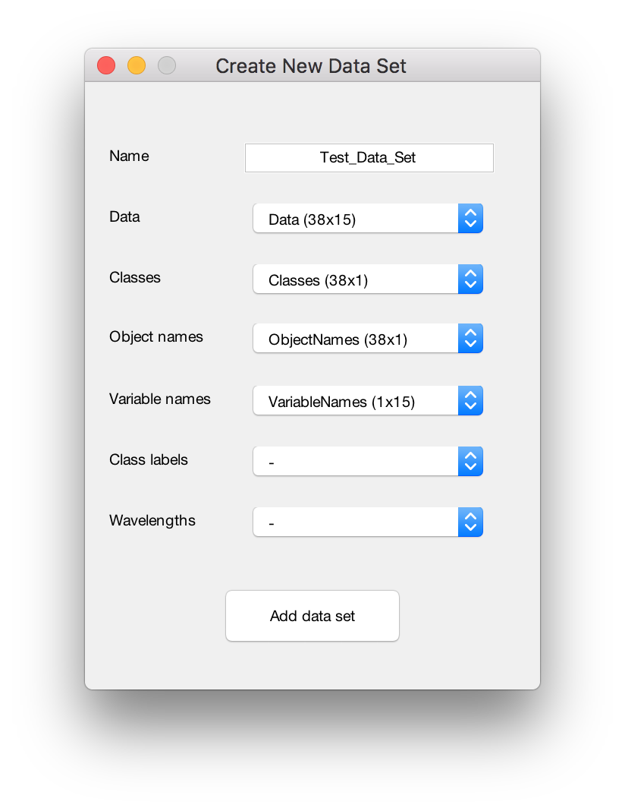
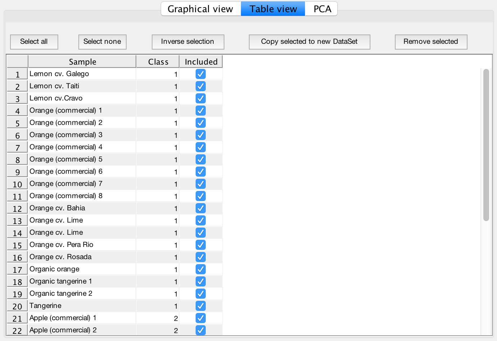
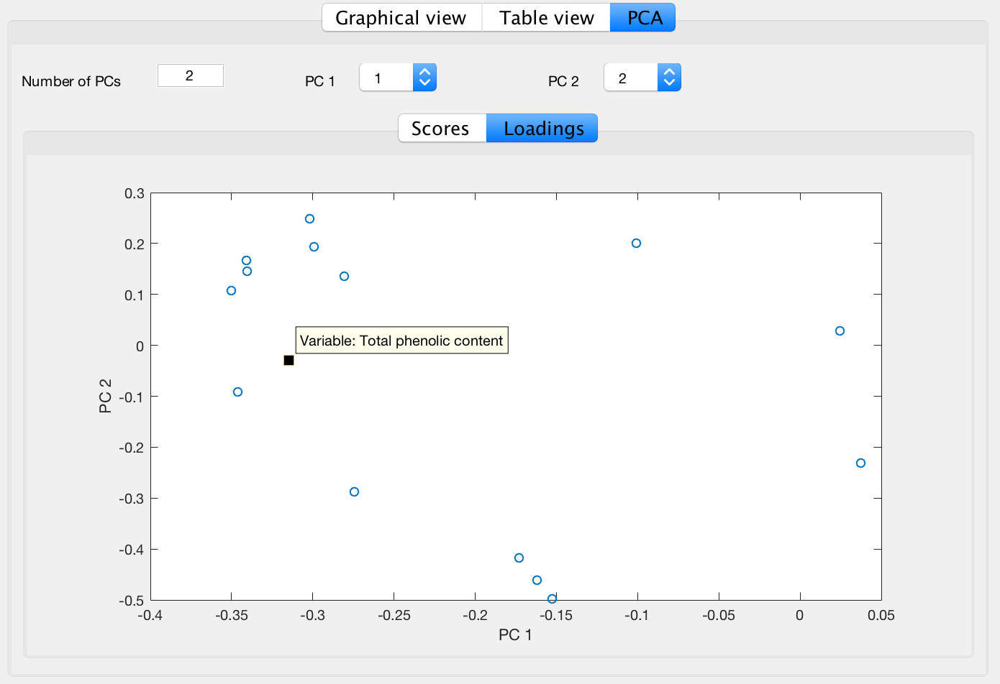

Hard and Soft Partial Least Squares Discriminant Analys (PLS-DA) Tool GUI help
Introdiction
The software implementation of hard and soft approaches to Partial Least Squares
Discriminant Analysis (PLS-DA) [1] can be used for both multi-class and two-class
classification. The Soft PLS-DA is based on Quadratic Discriminant Analysis
applied to the super-score matrix T. It can simultaneously attribute a sample to several classes. It also
allows to detect samples, which are not members of any training classes, and, therefore, reduce a
number of false positives (e.g. in the presence of outliers). The Hard PLS-DA represents the
conventional PLS-DA classification.
The toolbox provides instruments for data pre-processing as well as for interpretation and visualization of classification models.
The main class, PLSDAModel, is responsible for the logic and contains implementation of both methods and auxiliary algorithms.
The instance of this class has fields, which represent the actual model, and methods for data visualization and statistics.
The PLSDAGUI module provides graphical user interface, which allows user to create and manipulate
datasets, calibrate, test and explore models interactively. This class encapsulates all the
necessary data such as training or test sets and labels of the samples and variables. The PLS-DA Tool has its own
implementation of all necessary statistical functions and does not require the MATLAB Statistics
Toolbox.
PLSDAGUI
The PLSDAGUI module provides the graphical user interface for classes DataSet and PLSDAModel. The classes subfolder contains auxiliary classes used by the GUI.
Installation and first steps
To get the latest release plase use GitHub sources.
One can clone the git repository or download the source as a zip-file and install it in your Matlab environment.
To use the Tool you should set the Matlab current directory to the folder, which contains the Tool's main classes ("PLSDAGUI.m", "PLSDAModel.m", "DataSet.m") as well as all auxiliary files, or add this folder to the Matlab Path.
By default it is assumed that none of the built-in Matlab functions on the user's machine has been overloaded due to the use of a third-party toolbox.
Before you start working with the GUI you should load the data for analysis into the MATLAB workspace.
The data set and model objects can be saved from the GUI to the MATLAB workspace.
Description
The GUI main window is separated into 3 tabs: Data, Model and Prediction. Their availability depends on the user's actions.
On the Data tab user can create and modify the DataSet objects, which can be used for model building, validation and prediction. The functionality provided by the Data tab also includes visual means of Principal Component Analysis.
On the Model tab user can employ one of the previously created DataSet objects to build a Soft or Hard PLS-DA model.
On the Prediction tab user can apply the model to a new or test DataSet.
Examples
Launching the Tool
Load all neccessary data as variables into the current Matlab workspace.
To create a new PLS-DA model, click the New model button.
To work with an existing model load it into the Matlab workspace and click the Existing model button.
The Tool's main window will appear with one or more tabs available.
Start window
Working with the Data tab
To create a DataSet object:
Load all neccessary data as variables into the current Matlab workspace.
On the Data tab click the New dataset button.
In the modal window input the Name of the new Data Set and select the Data matrix.
Optionally one can select variables for Classes, Object names, Variable names (or Wavelegths) and Class labels.
Warning: A DataSet object without Classes can not be used for Calibration!
Click the Add data set button to create the DataSet object.
The newly created object is now available in the Matlab workspace as a variable and in the Data Set drop-down list under the specified name.

Create New Data Set window
To edit or delete a DataSet object:
To edit a DataSet object select it in the Data Set drop-down list and click the Edit button.
In the modal window select the new variables for Data matrix, Classes, Object names, Variable names (or Wavelegths) or Class labels.
Data fields of the selected DataSet object are shown in the drop-down list as variables with a prefix (equal to DataSet's name).
Warning: A DataSet object without Classes can not be used for Calibration!
Click the Save button to apply changes to the DataSet object.
The modified object is now available in the Matlab workspace as a variable and in the Data Set drop-down list under the specified name.
Edit Data Set window
To delete a DataSet object select it in the Data Set drop-down list and click the Delete button.
To apply preprocessing and analyze a DataSet object:
Select the object of interest in the Data Set drop-down list.
Check one or both checkboxes in the Preprocessing section to apply mean-centering and scaling to the dataset.
One can indicate whether the dataset will be used for Training or as New/Test dataset.
3 types of plots are available in the Plot section - Scatter plot (for 2 selected variables), Line plot (for all samples) and histogram (for 1 selected variable).
One can use Save and Copy to clipboard to store the image in the Graphical view tab to disk or clipboard.
Data Tab. Preprocessing.Data Tab. Graphical view.
To manipulate the samples in a DataSet object:
Select the object of interest in the Data Set drop-down list.
On the Table view sub-tab one can exclude or remove samples from the dataset.
Click on the checkbox near the sample's name to include\exclude individual samples.
Use the Select all, Select none and Inverse selection buttons to mass include\exclude the samples.
To create a new DataSet object based on the selection click the Copy selected to new DataSet button.
To remove selected items completely the dataset click the Remove selected button.

Data Tab. Table view.
To apply Principal Component Analysis to a DataSet object:
Select the object of interest in the Data Set drop-down list on the Data tab.
On the PCA sub-tab on can choose the number of PCs and select PCs for the PCA Scores and Loadings plots.

Data Tab. PCA.
Working with the Model tab
The Model tab becomes available if at least one DataSet object with Calibration property set to True is present in the Matlab Workspace.
On the Model tab select a training set from the Calibration drop-down list.
Adjust the parameters of the model. It is possible to indicate the type of the model (Soft or Hard), number of PCs in PLS decomposition, value of the type I error and Outlier significance level.
Click the Recalibrate button to create the model.
The results are now available on the Graphical view and Table view sub-tabs.
One can analyze the results visually on the Graphical view sub-tab.
The Allocation matrix, Confusion matrix and Figures of merit are available on the Table view sub-tab.
To get complete modelling results collected in a PLSDAModel object click the Save model button and select a name of the new model. It will be added to the Matlab workspace as a variable.
One can save the current workspace to a .mat file to preserve the results. Later on one can load the .mat file into the Matlab workspace and resume working with the model.
One can use Save and Copy to clipboard to store the image in the Graphical view tab to disk or clipboard.
Model tabModel tab. Graphical view.Model tab. Allocation table.Model tab. Confusion matrix.Model tab. Figures of merit.
The samples marked with yellow has not been assigned to any class by the model.
The samples marked with red has been assigned to a wrong class by the model.
The samples marked with pink has not been assigned to several classes by the model.
Working with the Prediction tab
The Prediction tab becomes available if the current model is finalized (on the Model tab).
To apply a PLS-DA model to the new data:
Here we assume that a model was previously loaded into the GUI or created on the Model tab.
On the Prediction tab select a test or new dataset from the New or Test Data Set drop-down list.
Click the Predict button.
One can analyze the results visually on the Graphical view sub-tab.
The Allocation matrix is available on the Table view sub-tab.
In case of a Test dataset (when Classes are known) the Confusion matrix and Figures of merit are also available on the Table view sub-tab.
One can use Save and Copy to clipboard to store the image in the Graphical view tab to disk or clipboard.
Prediction tab
References
1. A. Pomerantsev, O. Rodionova, Partial least squares discriminant analysis: Taking the right way - A
critical tutorial. J. Chemometrics, 2017, submitted.